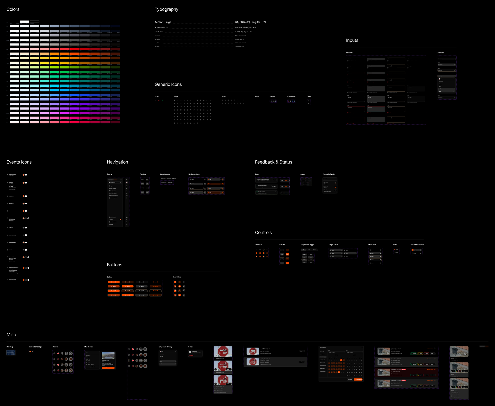
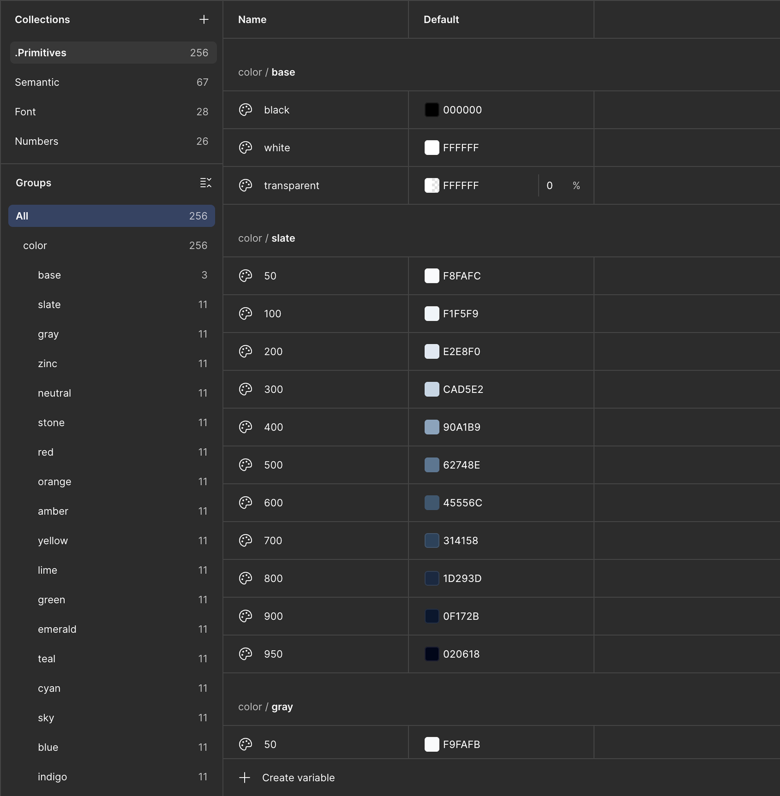
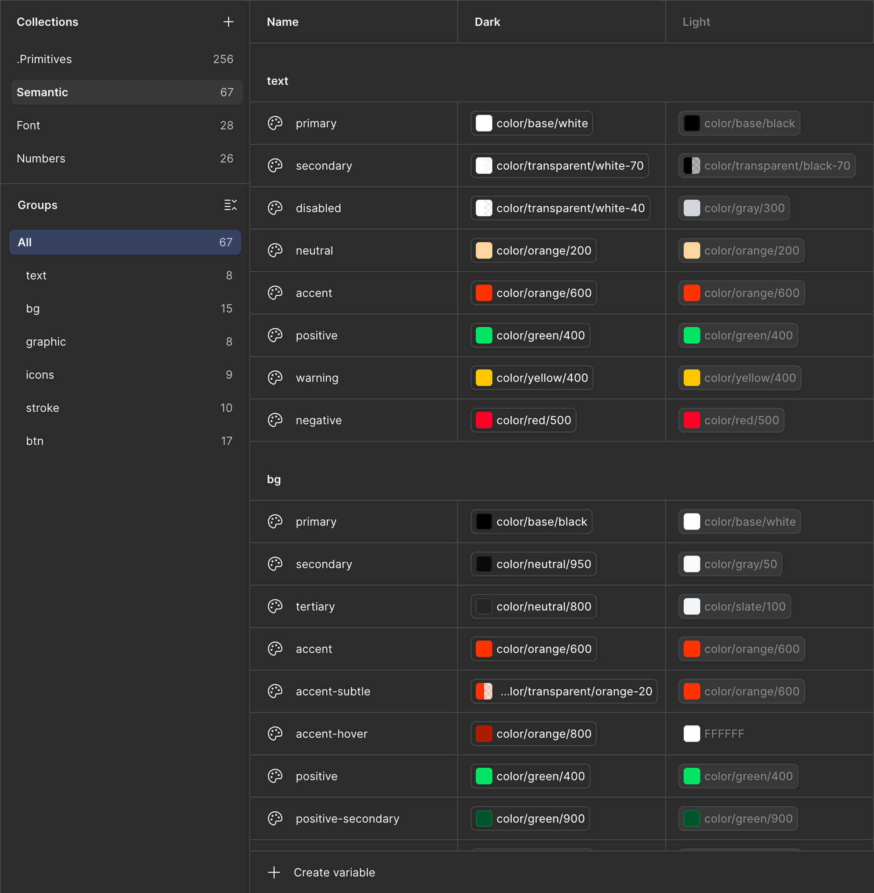
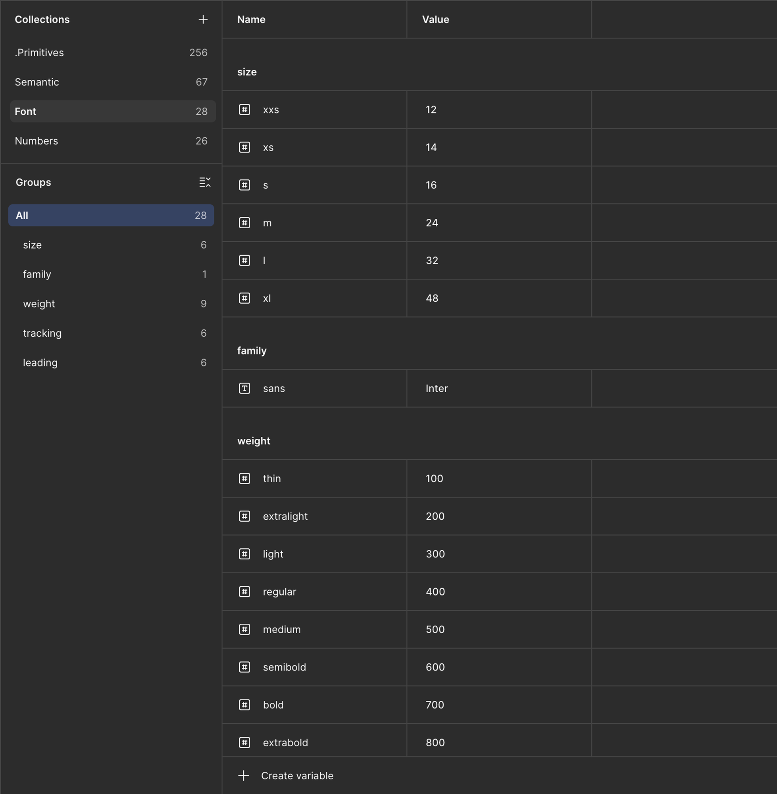
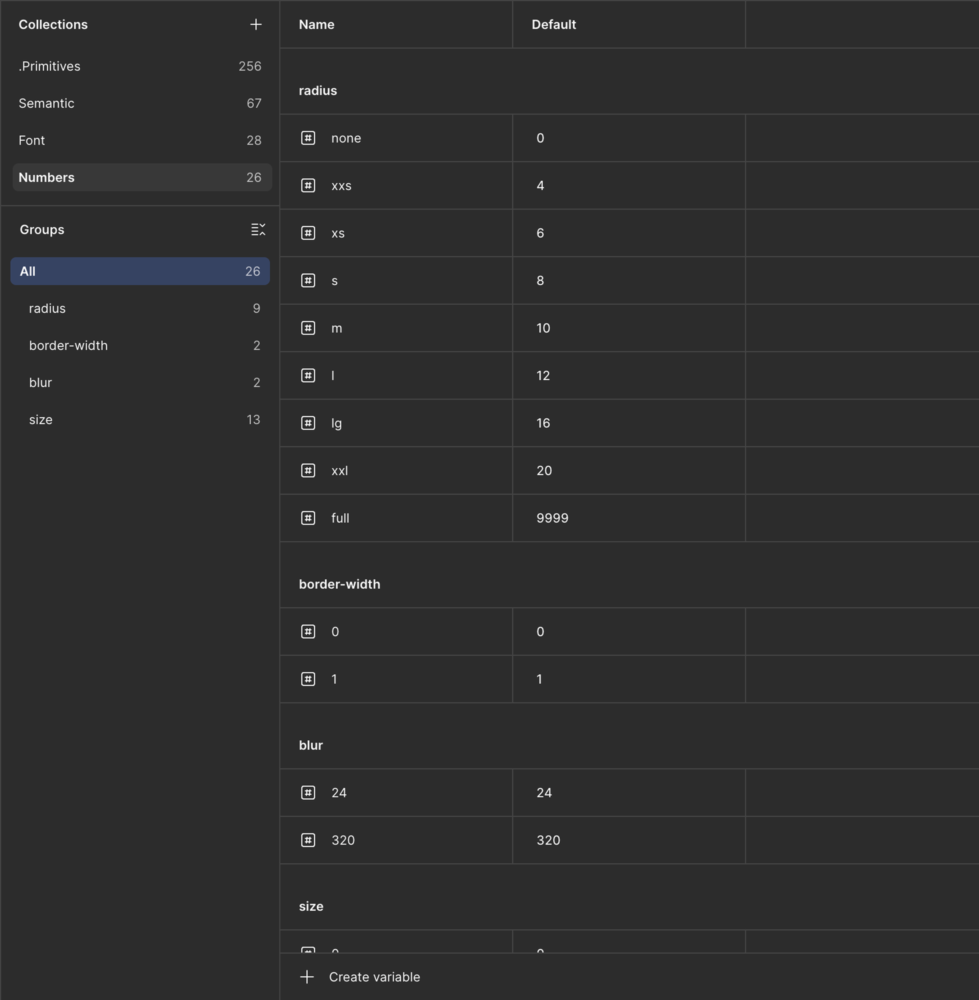

Дизайн-система для крупного продукта мониторинга дорожных аномалий в ОАЭ, собранная в Figma на переменных (Variables). Единый источник правды: примитивы, семантические токены, типографика и размеры, из которых строятся 50+ компонентов и все экраны интерфейса.
Задокументировать систему в одном месте и связать всё переменными, чтобы команде было проще пользоваться компонентами и быстрее масштабировать продукт:
Перед стартом изучил другие дизайн-системы и взял за основу цветовую систему Tailwind. Идею предложил дизайн-лид, дальше делал систему сам: лид только изредка подключался.
Старый локальный UI-кит перестал справляться с ростом продукта. Дизайн-лид предложил собрать нормальную дизайн-систему.
Начали смотреть в сторону атомарного дизайна, но для одного продукта без множества дочерних это избыточно. Выбрал модель проще: токены и компоненты без лишних уровней.
Перед тем как строить систему, изучил, как связаны примитивы и семантика, и взял за основу цветовую систему Tailwind.
Делал систему сам, дизайн-лид только изредка что-то поправлял.
Библиотека компонентов: цвета, типографика, инпуты, навигация, контролы, кнопки, статусы, иконки и карточки. 50+ компонентов с вариантами, из которых собираются все экраны.

Коллекция .Primitives, 256 переменных: полные цветовые шкалы по 11 ступеней (50–950). Базовый слой, на который ссылается всё остальное.

Semantic, 67 токенов (text, bg, stroke, icons, btn…), связанных с примитивами. Здесь же переключаются темы Dark и Light.

Font, 28 токенов: размеры (12–48), начертания, трекинг и интерлиньяж. Семейство: Inter.

Numbers, 26 токенов: радиусы, толщины границ, размытие и размерная шкала.
Правка токена в одном месте применяется по всему интерфейсу: систему используют все дизайнеры и разработчики продукта.
Тему стало просто переключать, а систему, в отличие от старого UI-кита, стало легко поддерживать.